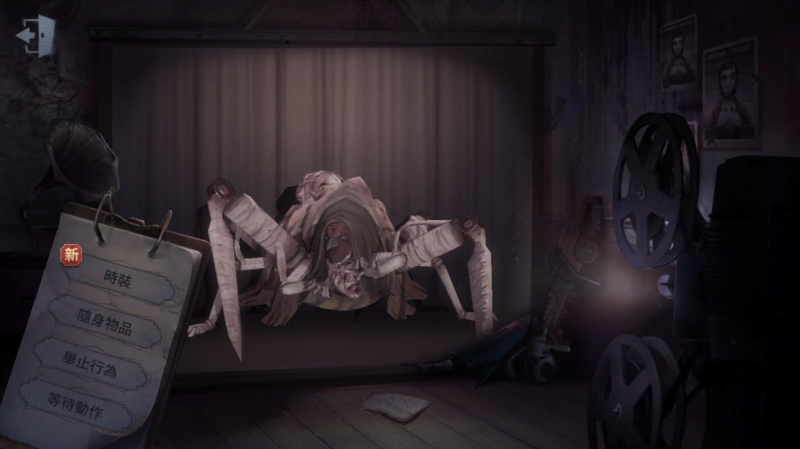
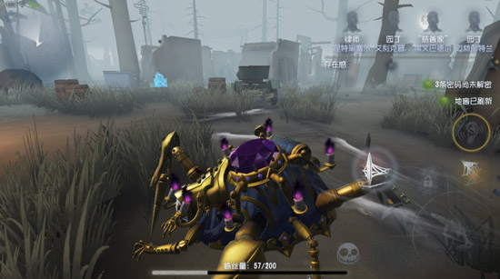

蜘蛛

【人物介紹】
名字：瓦爾萊塔
瓦爾萊塔曾是個出名的滑稽戲演員，在觀眾失去興趣後，淪落到三流馬戲團表演。她想要重新站上舞台，再次成為萬眾矚目的大明星。在一位機械師幫助下，瓦爾萊塔裝上靈活的機械義肢和精巧的機關裝置。創造出新表演項目—人形蜘蛛秀。老東家拒絕了她的演出，但瓦爾萊塔沒有氣餒。她接受了一份演出邀請，並準備在歐利蒂絲莊園舉行自己的復出秀。但很顯然，出於人身安全的考慮，任何觀眾都不應近距離觀看。
【能力介紹】
初始技能-結網：結網是蜘蛛的本能，點擊技能按鍵釋放蛛網陷阱，直到蛛絲用完或者再次點擊結束釋放。每當蜘蛛經過蛛網時會獲得一次不斷衰減的短暫加速，而踩過蛛網的求生者，會疊加一層蛛網纏身狀態並使蜘蛛獲得提示。
吐絲（二階段解鎖）：噴吐出成團的單層蛛網，擊中目標後為其疊加蛛網纏身狀態，並隨技能擊中刷新持續時間並疊加層數，達到3層後目標幾乎失去行動能力。
噴網（三階段解鎖）：隨著絲漿儲量增加，長按技能按鍵可噴吐出大量蛛絲結成厚網，厚網飛行速度較慢，但擊中後會給目標即刻疊加3層蛛網纏身狀態。
